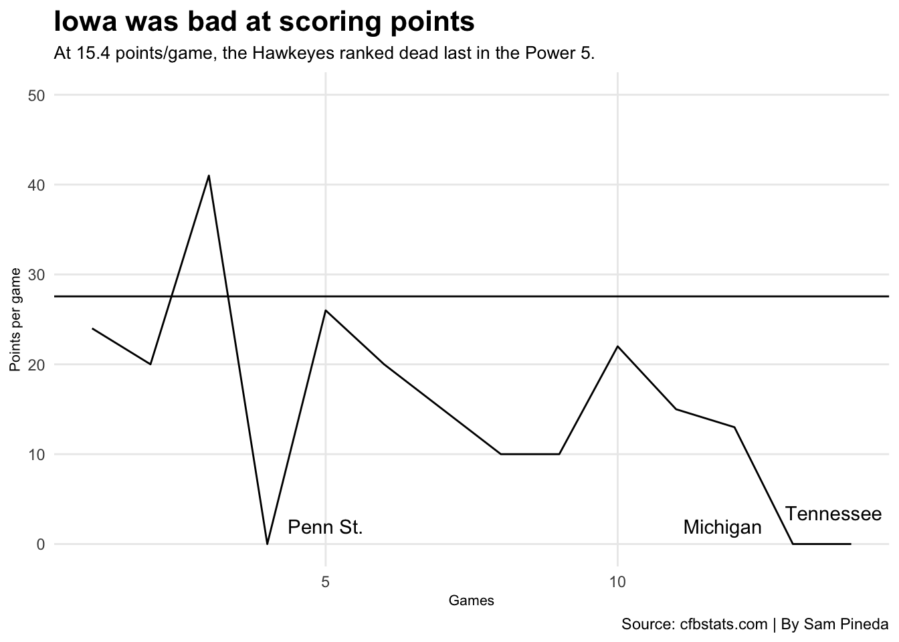

Iowa’s offense was bad in 2023. How did they win so much?
ncaa
football
iowa
Author
Sam Pineda
Published
December 9, 2024
Iowa was not good on offense in 2023, and everyone knows it. How did they manage to win 10 games and make it to the Big Ten Championship, though?
Iowa’s scoring offense ranked 132 out of 133 FBS teams in 2023, averaging a miserable 15.4 points/game. Who was worse then that? 1-11 Kent State at 14.7.
Code
library(tidyverse)library(ggrepel)library(gt)library(patchwork)#| message: falseiowascoringoff <-read_csv("iowascoringoff.csv")iowaqbs <-read_csv("iowaqbs.csv")pennstate <- iowascoringoff |>filter(Opponent =="Penn St.")mich <- iowascoringoff |>filter(Opponent =="Michigan")tenn <- iowascoringoff |>filter(Opponent =="Tennessee")ggplot() +geom_line(data = iowascoringoff, aes(x=Game, y=Points), color="black") +geom_text(data=pennstate, aes(x=5, y=2, label=Opponent)) +geom_text(data=mich, aes(x=11.8, y=2, label=Opponent)) +geom_text(data=tenn, aes(x=13.7, y=3.5, label=Opponent)) +scale_y_continuous(limits =c(0, 50)) +geom_hline(yintercept =27.56) +labs(y ="Points per game", x ="Games",title ="Iowa was bad at scoring points",subtitle ="At 15.4 points/game, the Hawkeyes ranked dead last in the Power 5.",caption ="Source: cfbstats.com | By Sam Pineda") +theme_minimal() +theme(plot.title =element_text(size =16, face ="bold"),plot.subtitle =element_text(size =10),axis.title =element_text(size =8),panel.grid.minor =element_blank() )

Iowa only managed to score above the national average in points/game one time in 2023 in a 41-10 home win over Western Michigan. The Hawkeyes were also shut out three times, all three times at the hands of a ranked opponent. Iowa lost to those teams by a combined score of 92-0.
When it comes to being shut out, Iowa has its fair share. Iowa has failed to score a point in 145 games in their history. Nebraska, in comparison, has been shut out only 98 times.
The quarterback play at Iowa has historically been somewhat average through the years. Recently, however, the quarterback position has been a dark smudge on an already ineffective offense. Head coach Kirk Ferentz, who had been criticized the year prior for his refusal to recruit players via the NCAA transfer portal, took two quarterbacks out of the transfer portal. Iowa welcomed Cade McNamara, a former starter for Michigan and who had defeated Iowa in the Big Ten Championship the prior season. In addition, Iowa also welcomed Deacon Hill, a backup for Wisconsin.
When McNamara was suffered a season-ending injury early in the season, Hill was thrusted into the starting role and safe to say… it did not go particularly well.
The graph above shows every Iowa quarterback in team history (any player that has completed a minimum three passes) and their average passing yards and completions over the course of their career as a Hawkeye. In McNamara’s defense, he was injured in just the fifth game of the year and would’ve been on his way to having among the top numbers of any Iowa quarterback in years past. Hill struggled with accuracy throughout his nine starts. He ended the season on a 49% completion rate, including only completing 10 passes on 28 attempts in the 12-10 loss to Minnesota (35.7%).
Another interesting note? Nebraska true freshman quarterback Dylan Raiola averaged more yards and completions in his first year than any Iowa quarterback has in their careers.
So, we’ve looked at how poor Iowa’s offense was. We still haven’t answered the question of how they managed to win 10 games, though. How did they do it?
One word: defense.
Code
defscoring <-read.csv("defscoring.csv")ggplot() +geom_line(data = defscoring, aes(x=Game, y=Points), color="black") +scale_y_continuous(limits =c(0, 50)) +geom_hline(yintercept =25.93) +labs(y ="Points per game", x ="Games",title ="Iowa's scoring defense was elite",subtitle ="The Hawkeyes ranked fourth nationally in scoring defense and 16th in total defense.",caption ="Source: cfbstats.com | By Sam Pineda") +theme_minimal() +theme(plot.title =element_text(size =16, face ="bold"),plot.subtitle =element_text(size =10),axis.title =element_text(size =8),panel.grid.minor =element_blank() )
Iowa held their opponents to under 20 points in each of their ten wins, including a shutout win over Rutgers. Linebacker Jay Higgins also led the country in tackles in 2023 with 171 total tackles (71 solo). Kirk Ferentz’s teams are historically known for intercepting the ball on defense, and the 2023 team followed the trend being tied for ninth in the country for interceptions (16).
Iowa’s defense was elite in their ten wins, but what about their four losses?
lossdef |>gt() |>cols_label(IowaRank ="Iowa's rank",YPG ="Yards per game",YPGAvg ="YPG national average" ) |>tab_header(title ="Iowa's defense when they lose" ) |>tab_style(style =cell_text(color ="black", weight ="bold", align ="left"),locations =cells_title("title") ) |>tab_source_note(source_note =md("**By:** Sam Pineda | **Source:** cfbstats.com") ) |>tab_style(locations =cells_column_labels(columns =everything()),style =list(cell_borders(sides ="bottom", weight =px(3)),cell_text(weight ="bold", size =12) ) ) |>opt_row_striping() |>opt_table_lines("none")
Iowa's defense when they lose
Losses
Iowa's rank
Yards per game
YPG national average
4
3
308
424.1
By: Sam Pineda | Source: cfbstats.com
Iowa’s total defense ranked in the top 25 nationally in games they both won and lost. Interestingly, Iowa’s total defense in losses ranked third in the country despite allowing 104 points combined in those four losses. They’re total defense in wins ranked 22nd nationally. Even when Iowa loses, they still somehow manage to play decent defense compared to the national averages.